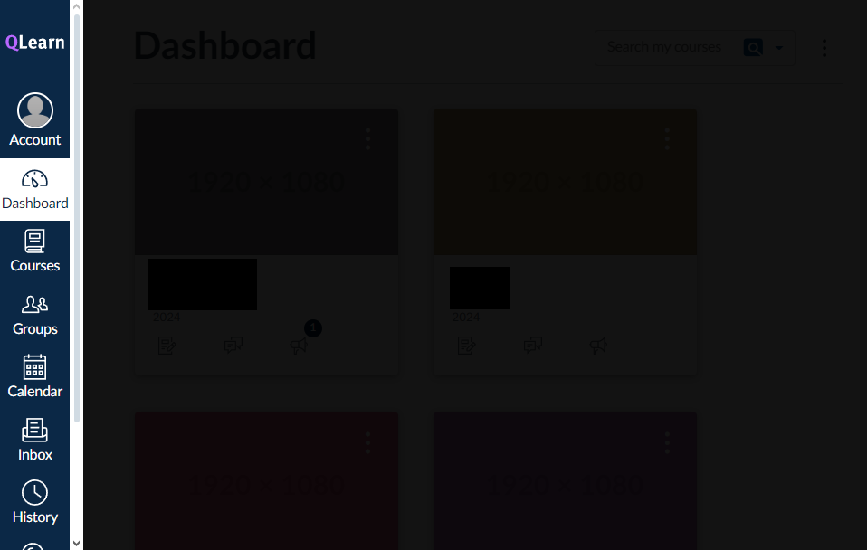
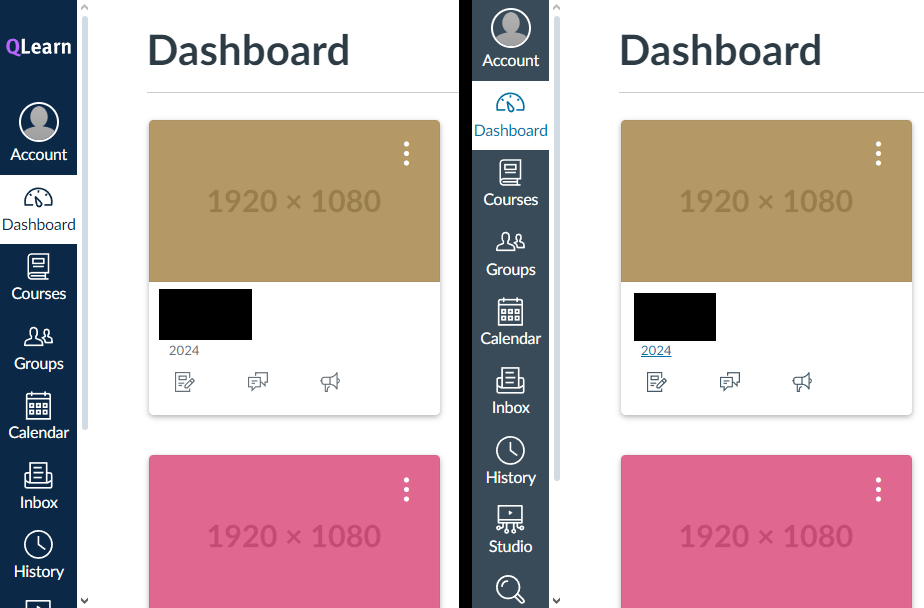

Specifically Canvas LMS, but i'm in Queensland, and that's what Canvas has been called.
This website isn't "QLearn Is Good," so let's get this over and done with.
The API
Canvas's API is probably one of the best API i've used. The docs are well written, and the PI covers everything that you could possibly want to do with Canvas.
It's also very useful if you hate QLearn and want to rewrite everything to your needs
RWD
The UI is very responsive, and works well on mobile. Canvas is designed for schools, where phones are banned. Nice one.
Let's start off with the UI. It's not the crappiest in the world, but it gets the job done.
It could be made better. Let's start off with whatever this is meant to be:

Why do I need a damn scrollbar to see a navigation menu? Not every student has a 4K monitor.
Have the developers never heard of an overflow menu? It's so damn easy, i'll even do it myself
here.
Wow! Look at how better that looks without the ugly scollbar, and it only took one line of
JavaScript.
That's it! And you couldn't implement that in your UI? Shame on you.
- document.querySelector('.menu').classList.toggle('show')
I'm not done though. On mobile, you have actually implemented an overflow menu for the sidebar, from a hamburger. That's the exact same thing
as the overflow menu we've been wanting, but you've only implemented it on mobile. Have you heard
of this amazing life hack? It's called CTRL + C and CTRL + V. I bet all the
Canvas devs are going crazy in their office right now after finding about this.
The only damn accessibility feature in this app is an immersive reader.
Except for High Contrast, but it's not very effective:

Left: High Constrast off, Right: High Contrast on
"Ooh! I don't give two and a half shits about people, lets just make the sidebar lighter and call it a day!"It's ridiculous. I don't think the devs realise that their white ass background burns into the eyes of users. Define your damn CSS variables and create a dark mode setting.
- Some dev from Canvas
This domain expires in . I am not renewing it. This website was made by InfinityAtom. Questions or concerns? Email hello@qlearnsucks.tech or hello@infatom.site